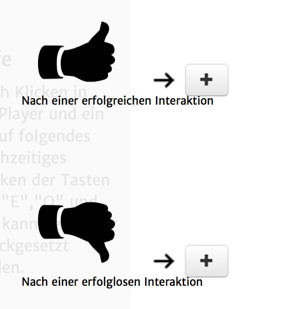
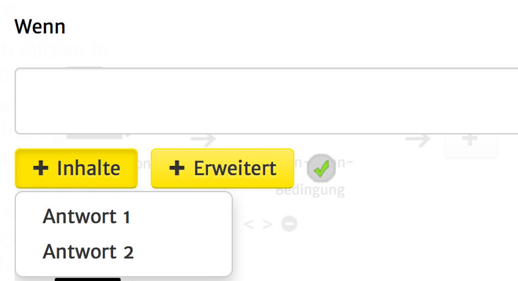
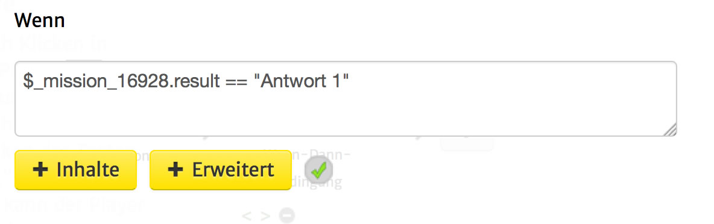
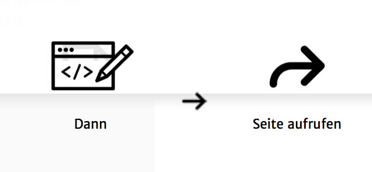

Frage (Multiple Choice)
Unter einer Multiple Choice Question versteht man eine Frage mit einer Auswahlliste von möglichen Antworten.
Das sieht in der einfachsten Version so aus:
Zunächst blicken wir auf die Einstellungsmöglichkeiten dieses Seitentyps.
|
Fragetext: Der Text der im oberen Bereich der Seite angezeigt wird.
Bis zum Erfolg wiederholen?: Wenn hier ein Haken gesetzt ist, führt die Auswahl von Antworten, die nicht als "Richtig" markiert wurden, des Spielers automatisch zu einem erneuten Aufruf der Seite. Die Frage wird so lange neu angezeigt, bis der Spieler die richtige Antwort wählt.
Feedback bei Wiederholung: wird aktuell ignoriert.
Antworten zu Beginn mischen: Wenn hier ein Haken gesetzt ist, wird die Reihenfolge der Antworten zu Beginn zufällig gemischt.
Nur Bilder anzeigen?: wird aktuell ignoriert.
Hintergrund: wird aktuell ignoriert. |
Um eine beliebige Anzahl von Antwortmöglichkeiten anzuzeigen und darauf unterschiedlich zu reagieren, befolge die folgenden Schritte:
1. Unter Inhalt die gewünschten Auswahömöglichkeiten hinzufügen.
2. Falls nur zwischen Richtig oder Falsch unterschieden werden soll, bei den richtigen Antworten das Häkchen hinter "Richtig?" setzen.
3. Auf "Ereignisse" klicken

4A. Falls nur zwischen Richtig oder Falsch entschieden werden soll, bei erfolgreiche Interaktion (Richtige Antwort) und erfolgloser Interaktion (Falsche Antwort) mit einem Klick auf "+" die gewünschten Aktionen hinzufügen.

Falls es gewünschte Aktionen für beide Fälle gibt (z.B. ein Seitenwechsel) können diese unter "Ende der Mission" hinzugefügt werden.
4B. Falls zwischen den verschiedenen Einzel-Antworten genauer unterschieden werden soll, so muss nun unter "Ende der Mission" für jede der definierten Antworten ein Fall angelegt werden.
Dazu geht man folgendermaßen vor:
4B.1 Unter "Ende der Mission" auf das + Klicken und in der Liste "Wenn-Dann-Bedingung" auswählen und hinzufügen.

4B.2 Wieder zu "Ende der Mission herunterscrollen" und auf die neu angelegte "Wenn-Dann-Bedingung" klicken.

4B.3 In dem nun geöffneten Fenster gibt es nun zwei Interaktionsmöglichkeiten: Eine Bedinung und eine Aktion die darauf folgt definieren.
Für die Bedinung gibt es vorgefertigte Einstellungen, die mit einem Klick auf "+Inhalte" oder "+Erweitert" aufgerufen werden können.
Für den hier vorliegenden Fall, klicken wir nun auf "+Inhalte" und wählen die gewünschte Antwort aus.

4B.4
Das Fenster müsste nun ungefähr so aussehen:

ACHTUNG! Wenn du den Antworttext abänderst, musst du diese Änderung auch in der Wenn-Dann-Bedingung angeben.
4B.5 Nun können weiter unten in dem Fenster die Aktionen, die bei der Auswahl dieser Antwort ausgeführt werden sollen, definiert werden.

Wenn also zum Beispiel bei der Auswahl einer bestimmten Antwort, eine bestimmte Seite aufgerufen werden soll, kann hier die Aktion "Seite aufrufen" und darin die gesuchte Seite spezifiziert werden.
